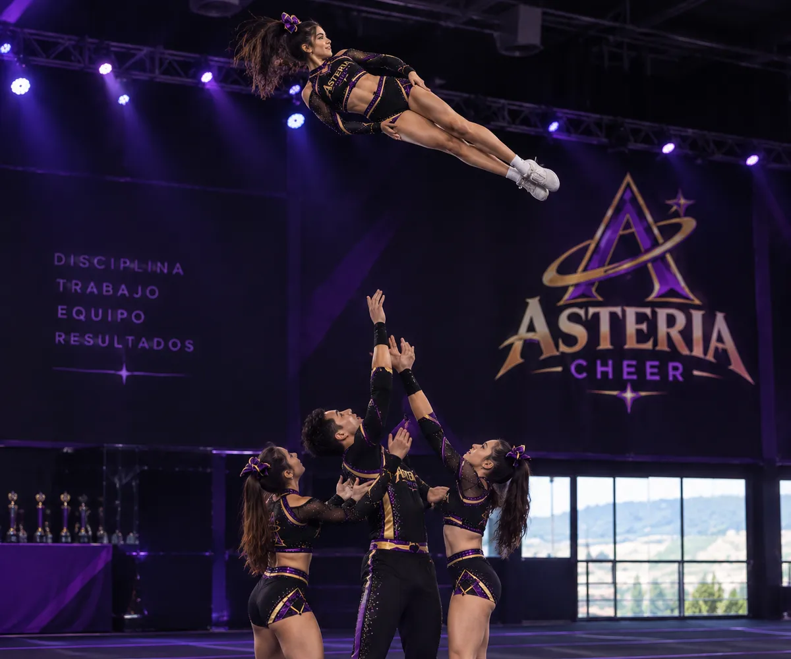

Aunque en las películas suele confundirse con animadoras agitando pompones para animar a otros equipos, el porrismo (cheerleading) es un deporte de alto rendimiento que va mucho más allá. Es una disciplina que exige técnica, fuerza, resistencia, acrobacias y una confianza absoluta en cada integrante del equipo.

En cada competencia, todo el trabajo realizado durante un año entero de entrenamientos se demuestra en una intensa rutina de 2 minutos y medio. Muchas veces esos dos minutos y medio no alcanzan a mostrar el increíble esfuerzo y sacrificio que hace cada deportista en sus entrenamientos; sin embargo, salen a la pista a darlo todo para lograr una rutina perfecta que deslumbre a los jueces y demuestre la técnica trabajada.
Aunque en Colombia aún no es un deporte tan conocido ni patrocinado, en países como Estados Unidos es una disciplina ampliamente practicada e inclusive permite acceder a becas universitarias.